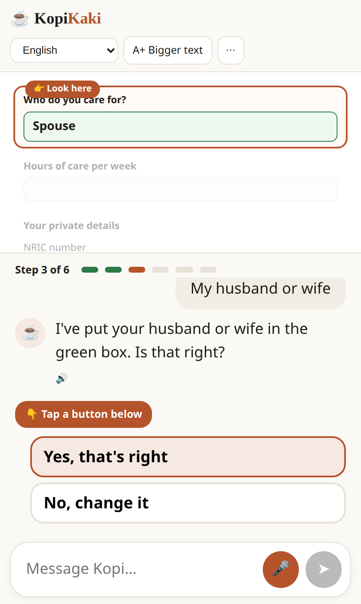

KopiKaki
A voice-first AI friend that helps older caregivers with failing eyesight finish online support forms.
WhoOlder caregivers with declining vision
TaskApplying for a caregiver support grant online
AI's jobRead, explain, fill in. Never submit.
1The problem
 AnikaMeyer, CC BY-SA 4.0
AnikaMeyer, CC BY-SA 4.0
62median age of daily caregivers [1]
 Shixart1985, CC BY 2.0
Shixart1985, CC BY 2.0
Support is online, but hard to see and find [9, 11, 13]
 mailer_diablo, CC BY-SA 3.0
mailer_diablo, CC BY-SA 3.0
They rarely ask for help [3, 5, 6]
Older caregivers with declining vision give up on online support forms, so the help meant for them never arrives.
What exists todayGeneral digital-skills programmes for seniors, plus agency hotlines [14]
The gapNo caregiving-specific help at the moment someone is stuck on the form [14]
2The solution: Kopi reads, explains, fills in. You decide.

Working prototype. Listens first (ELIZA-style), then guides the form one question at a time, lights up the matching box and reads every entry back.
Offers help[3, 6]
Reads aloud[9]
Explains simply[11, 13]
Fills in, reads back[11]
You press Submit[8]
What it is & who it is for
A chat companion beside an agency form, for older caregivers whose eyesight makes dense forms hard to read. Offered by community partners, never forced [3, 6, 9, 10]. Speaks English, Mandarin, Malay and Tamil.What the AI does
- Reads and explains each section in plain words
- Listens to typed or spoken answers
- Fills the non-sensitive boxes, reads each back
- Spots scam wording
What the AI never does
- Types NRIC, income or bank details
- Presses Submit for you
- Predicts how much you will get
- Guesses when unsure: it hands over
3Interdisciplinary framing: three lenses, one design
🔬
STEM
Speech and screen-reading AI for low vision [9, 11]
🏛️
Business & Governance
Works inside agency rules; saves staff time [14-18]
❤️
Social sciences
Dignity: caregiving is seen as personal duty, help is rarely asked for [3, 5, 6]
Where the lenses meet: each design rule comes from two of them
Society × GovernanceDignity + consent: the user types private details and presses Submit. Kopi never acts alone.
STEM × SocietyLow vision + not wanting to ask: voice-first, one lit-up box at a time, offered but never forced.
Governance × STEMAgency data rules: Kopi sees only the form, keeps nothing, and Singpass stays with the user [14].
4Human-in-the-loop protocolproposed
| When | Kopi stops and | The human |
|---|---|---|
| Not understood twice, or asks for a person | Says "I'm not sure" and hands over [8] | Hotline officer takes over |
| NRIC, income, bank, payment | Masks it, tells the user to type it in the form | The user, alone |
| 25 seconds of silence | Pauses; nothing is sent | The user taps "Carry on" |
| Scam wording (fee, OTP) | Halts and warns; flags to agency | Agency reviews the flag |
| Self-harm or abuse words | Stops chatting, gives hotline numbers | Trained responder |
5Stakeholder concerns
| Feasibility | No agency system changes: Kopi sits beside the public form. Prototype built; the pilot tests it. |
| Cost | Not yet costed, and we say so. The pilot records staff time and cost per completed form. |
| Ethics & privacy | Opt-in, on-device, deleted after use; the user always has the final say. We test across languages and ages for bias. |
| Implementation | Free setup by hospitals, CCs and volunteers [9, 10]. If Kopi is wrong, it says "not sure". |
6Why someone should act
| Caregivers | Finish it themselves, with dignity. Ask: try it. |
| Agencies | More schemes reach the people they are for [13, 14]. Ask: let Kopi sit beside your form. |
| CCs & hospitals | A tool for outreach they already do [9, 10]. Ask: host the set-up. |
7Pilot
1 community club · ~30 caregivers · 3 months. Measure: forms abandoned · hotline calls · confidence · loneliness · cost per form [5, 8, 11, 13]